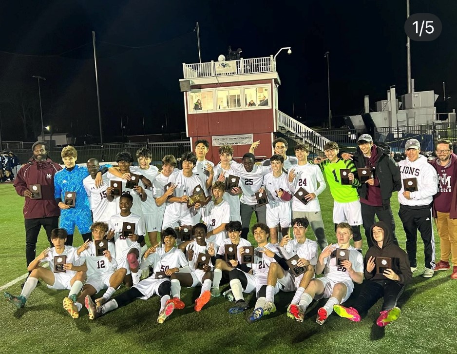

In order to find out which varsity team is the best at HM we have to look at the criteria that could decide the award. Firstly, how good they are, for a team to be a great Horce Mann team they would need to acctually be good at the sport that they are playing. Secondly, watchability, some sports are more appealing to the public than others, also some are very difficult to see. Finally, community, the way the team acts around the school, eg: their commitment to spirit and their ability to relate with other squads. I think in Order to start this we have to create a short list for teams that are qualify in some of the subjects. In the first subject we must look at the most watched sports at HM, soccer and football for the fall, basketball in the winter, and baseball or lacross in the spring. The next I would talk about is how good the team is, in fall the best teams are waterpolo, soccer and tennis, in the winter its swim, and in the spring there isn't really a standout team. Finally, the community, the team with the best spirit is soccer in the fall, basketball in the winter, and no one in the spring. If we look at the only team that is in each of the lists it is Boys varisty soccer which is why its the best. And in addition to that, we have the Goat who was robbed of goal of the season(see below)
